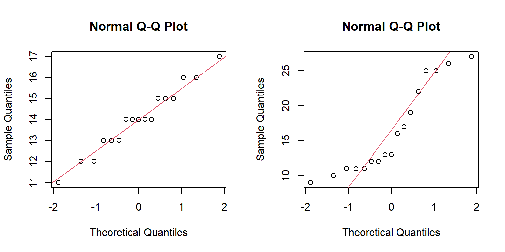

3 Normal distribution
Statistical inference is the process by which we infer from a sample statistic to the population. We need to infer from samples to populations because it is usually impossible to measure the entire population. Inference is the process of estimating population parameters from a sample.
In order to infer from samples to populations we need to understand how the statistics we generate from our samples are likely to ‘behave’. To do this we use theoretical distributions.
Q. 3.1
The normal (a.k.a., Gaussian) distribution is a theoretical distribution that is central to inferential statistics. If your data (or, more accurately, statistics derived from you data) are reasonably approximated by the normal distribution then you will be able to use a wide range of techniques to deal with it.
In this practical we will examine the normal distribution, calculate Z scores, and interpret those Z scores. We’ll assess whether data are reasonably assumed to be normally distributed, transforming the data where they are not. We’ll apply the CLT and evaluate how well other distributions are approximated by the normal distribution.
3.1 Using the normal distribution
The length of a catch of herring was measured. Five hundred individuals were studied. We will consider this group to be the entire population of interest. The population parameters are: \(\mu = 37.6 cm\) and \(\sigma = 1.20 cm\).
Q. 3.2
Q. 3.3
Q. 3.4
If we know the population parameters, we can calculate Z scores for individuals (or groups of individuals) from that population and calculate how unusual they are. For the moment, we are interested in determining what proportion of fish from this population are expected to be < 38 cm.
Code
mu <- 37.6
sigma <- 1.2
y <- 38
y_lt38_df <- tibble(len=seq(mu-3*sigma, mu+3*sigma, length.out=1e3),
density=dnorm(len, mu, sigma),
shade=len < 38)
ggplot(y_lt38_df, aes(len, ymin=0, ymax=density, fill=shade)) +
geom_ribbon(colour="grey30") +
scale_fill_manual(values=c("white", "red3"), guide="none") +
labs(x="Herring length (cm)", y="Probability density") +
theme_classic()
3.1.1 Using R to calculate areas under the normal curve
To solve this problem using R we use the cumulative probability. Observations at the extreme low end are extremely unlikely, but the probability of observing data increases and reaches a maximum at the mean, after which it declines again. The normal distribution is symmetrical.
Q. 3.5
The R functions for the normal distribution take the same form as those for the binomial and Poisson distributions. To calculate the probability is of observing a fish less than 38 cm, you need to specify the model and select the appropriate distribution function. Use ?dnorm or ?pnorm and look at your options (Figure 3.2).
Code
library(cowplot)
norm_df <- tibble(x=seq(-4, 4, length.out=1e3),
x2=seq(0, 1, length.out=1e3),
lo=0) |>
mutate(d=dnorm(x),
q=qnorm(x2),
p=pnorm(x),
above_m1=x > -1)
labels_df <- tribble(~x, ~y, ~label,
-1, dnorm(-1), "dnorm(-1) = 0.242 ",
-1, 0, " qnorm(0.158) = -1")
p1 <- ggplot(norm_df, aes(x)) +
geom_ribbon(aes(ymin=lo, ymax=d, fill=above_m1)) +
geom_line(aes(y=d)) +
geom_point(data=labels_df, aes(y=y), size=2) +
geom_text(data=labels_df[1,], aes(y=y, label=label), hjust=1, size=3) +
geom_text(data=labels_df[2,], aes(y=y, label=label), size=3,
hjust=0, vjust=0, nudge_y=0.01) +
scale_fill_manual("", values=c("red3", "white"),
labels=c("pnorm(-1) = 0.158", "")) +
labs(x="Value", y="Density") +
theme_classic() +
theme(legend.position=c(0.8, 0.8),
legend.text=element_text(size=8),
legend.key.size=unit(0.3, "cm"))
p2 <- ggplot(norm_df, aes(x, d)) + geom_line() +
labs(x="Value", y="dnorm(Value, 0, 1)") +
theme_classic()
p3 <- ggplot(norm_df, aes(x, p)) + geom_line() +
labs(x="Value", y="pnorm(Value, 0, 1)") +
theme_classic()
p4 <- ggplot(norm_df, aes(x2, q)) + geom_line() +
labs(x="Probability", y="qnorm(Probability, 0, 1)") +
theme_classic()
plot_grid(p1, p2, p3, p4, align="hv", axis="tblr")To calculate \(P(y_i < 38 | \mu = 37.6, \sigma = 1.2)\), we use pnorm(), which gives the cumulative probability from -Inf to the value we choose.
# cumulative probability: which bit of the curve does this relate to?
pnorm(q = 38, mean = 37.6, sd = 1.2) Q. 3.6
Q. 3.7
We can plot any normal distribution we like. Play with the values for mu and sigma below, adjusting the values for from and to as needed to see the distribution.
3.2 Normal model adequacy
In a population of long-eared wrasse, we calculate \(\mu\) and \(\sigma\) and find \(y \sim Norm(15.2 cm, 25.1 cm)\).
Q. 3.8
Q. 3.9
Q. 3.10
Q. 3.11
3.3 Quantiles
A quantile is a value that divides a frequency distribution (i.e. a set of numbers) into equally represented groups (i.e., the same number of observations per group). For example, there are three values (Q1, Q2, Q3) that split a normal distribution into four groups (negative infinity to Q1, Q1 to Q2 (median), Q2 to Q3, and Q3 to positive infinity). Q3 - Q1 is the middle 50% of the data: the interquartile range.
There are 99 quantiles, called percentiles, that split your data into 100 groups. The 2.5 percentile is the value that splits your data into two groups corresponding to 2.5% along the distribution (from negative infinity for the normal distribution). Just as we can ask what proportion of a distribution is above or below a set value, we can also ask between which values will a given percentage of my data lie (e.g. what values correspond to the middle 95%?).
To solve this problem using R we use the quantile function qnorm(), speciying the cumulative probability as an argument. To find the value that splits the upper 2.5%:
qnorm(p = 0.975, mean = 37.6, sd = 1.2) # p is the cumulative probability [1] 39.95196probs <- seq(from = 0.1, to = 0.9, by = 0.2) # vectorize for multiple values
rbind(probs, quantiles=qnorm(p = probs, mean = 37.6, sd = 1.2)) [,1] [,2] [,3] [,4] [,5]
probs 0.10000 0.30000 0.5 0.70000 0.90000
quantiles 36.06214 36.97072 37.6 38.22928 39.13786[1] 35.24804 39.95196These values (c(0.025, 0.975)) identify proportions of the cumulative curve. That is, they identify the bottom 2.5% and the bottom 97.5% of the curve. Values between these two parameters constitute the central 95% of your data.
We quote our mean and interval like this:
The mean fish length and 95% interval was 37.6 cm (35.2 – 40.0 cm).
Remember to use to same degree of precision (significant figures) for confidence intervals as was used to gather the data (or as specified in the question, defaulting to three).
Q. 3.12
Q. 3.13
p=0.5?
Q. 3.14
qnorm().
To visualize regions of the normal distribution, let’s use ggplot.
mu <- 37.6
sigma <- 1.2
lb <- 36 # lower boundary
ub <- 40 # upper boundary
norm_df <- tibble(z=seq(-4, 4, length.out=1000),
x=z*sigma + mu,
densNorm=dnorm(x, mu, sigma))
ggplot(norm_df, aes(x, densNorm)) +
geom_line() +
geom_ribbon(data=norm_df |> filter(x > lb & x < ub),
aes(ymin=0, ymax=densNorm), fill="steelblue") +
labs(x="Herring length (cm)",
y="Probability density",
subtitle=paste0("P(", lb, "< y <", ub, ") = ",
signif(pnorm(ub, mu, sigma) - pnorm(lb, mu, sigma), digits=3))) +
theme_classic() # changes how the plot looks: ?theme
Q. 3.15
lb and ub in the code.
Q. 3.16
Q. 3.17
How would you expect these intervals to change when the population standard deviation \(\sigma\) changes?
Q. 3.18
Q. 3.19
A z score gives the number of standard deviations away from the mean for any value. The z score is the value from the standard normal distribution (\(\mu = 0, \sigma = 1\)) that corresponds with the same quantile of the original distribution. The values for any normal distribution can be converted to Z scores by subtracting \(\mu\) and dividing by \(\sigma\), such that \(z_i = \frac{y_i - \mu}{\sigma}\)
Q. 3.20
3.4 Testing for normality
Many statistical tests assume that data are reasonably approximated by a normal distribution and have homogeneous variance. R can be used to formally test the assumption that data are normally distributed, though you should have some idea of whether this is likely through consideration of the data source. This applies particularly where you have a small sample size which makes evaluating the distribution challenging.
The data you collect will be part of a population. The normality check assesses the viability of the assumption that the data you collected were drawn from a population that was normally distributed. Note that populations are, in practice, never actually normally distributed. Your test is to assess how reasonable the assumption of normality is.
MS <- read_xlsx("data/H2DS_practicalData.xlsx", sheet = "Mood shrimp")
# check the data using head(), str() etc.We’ll learn more advanced methods in Chapter 5 for the analyses we cover, but we can plot how well our observations follow the expectations of a normal distribution with qqnorm() and add a line of perfect fit with qqline().
par(mfrow = c(1, 2))
qqnorm(MS$Shrimp1)
qqline(MS$Shrimp1, col = 2) # the data fall near the line
qqnorm(MS$Shrimp2)
qqline(MS$Shrimp2, col = 2) # the data deviate widely from the line
The axes are automatically scaled so that perfectly normally distributed data would fall on a diagonal line. Any deviation from the red straight line indicates a lack of normality. What we need to assess is how serious any deviation is and whether it is sufficient to indicate that the assumption of normality is not ‘reasonable’. This is a subjective decision, and two different statisticians may tell you different answers about the same data.
As sample size decreases, it becomes increasingly difficult to see if your data are reasonably approximated by a normal distribution. There are many formal statistical methods for assessing normality, but as we already know, it is impossible for a population to be distributed perfectly normally and this means such tests are largely redundant. You must assess the assumptions of your model, but you should be aware that all data fails the assumptions. The question is whether the assumptions are reasonably well met such that the model results can be useful. There is sadly no hard rule as to what constitutes ‘reasonable’!
Q. 3.21
Shrimp1 and Shrimp2. Comment on their apparent distributions.
3.5 Data transformations
The assumption that our sample data are drawn from a normally distributed population is central to the use of many important inferential statistical techniques. However, frequently it is not reasonable to assume that data are approximately normally distributed.
A common issue is that our measurements are logically bounded. For example, chemical concentrations (e.g., zinc in sediments) cannot be negative. Similarly, you cannot have negative lengths, time, mass, etc. Proportions must be between 0 and 1. Where data is collected ‘near’ a logical boundary they are often not normally distributed, since the normal distribution predicts ‘tails’ which are impossible.
One solution is to use a mathematical transformation to convert your data to something that is reasonably approximated by a normal distribution even if it is not well approximated in the original measurement units. Often transformations will also correct unequal variances (see Chapter 5) in addition to non-normality so they are very useful. The appropriate transformation depends on the data.
Common transformations include:
- Log (
log(x), inverse:exp(x)): When the distribution is skewed right and all values are >0. Often ‘cures’ heteroscedasticity. Commonly used for observations spanning orders of magnitude such as body size.
- Square-root (
sqrt(x), inverse:x^2): When the measurements are areas (e.g., leaf areas). Often used to ‘down-weight’ common species (e.g., Chapter 6), which is unrelated to model assumptions. Values must be >0.
- Arcsine (
asin(x), inverse:sin(x)^2): When the measurements are proportions. Tends to stretch out the tails (e.g., near 0 or 1 for proportions) and squash the middle (e.g., near 0.5).
- Logit (
boot::logit(x), inverse:boot::inv.logit(x)): Used for proportions excluding 0 and 1. Also commonly used in models with a binary (Bernoulli) response variable (e.g., survival probability predicted by temperature, where the response variable is ‘alive’/‘dead’). - Reciprocal (
1/x, inverse:1/x): When the distribution is skewed right. Generally ‘stronger’ than a log transformation and often has logically interpretable units (\(m~s^{-1}\), \(s~m^{-1}\)).
Identifying the correct transformation can be led by an underlying comprehension of the nature of the data. However, this often doesn’t work so expect some trial and error.
We can visualize the relationship between data on the original scale and the transformed values. For values bounded by 0:
Code
positive_df <- tibble(orig=seq(0.01, 10, length.out=1e3)) |>
mutate(sqrt=sqrt(orig),
ln=log(orig),
reciprocal=1/orig,
squared=orig^2) |>
pivot_longer(cols=2:5, names_to="transformation", values_to="new_value")
ggplot(positive_df, aes(orig, new_value)) +
geom_line() +
facet_wrap(~transformation, scales="free", nrow=1) +
labs(main="Positive values", x="Original value", y="Transformed value")And for proportions:
Code
proportion_df <- tibble(orig=seq(0.01, 0.99, length.out=1e3)) |>
mutate(sqrt=sqrt(orig),
ln=log(orig),
asin=asin(orig),
logit=boot::logit(orig)) |>
pivot_longer(cols=2:5, names_to="transformation", values_to="new_value")
ggplot(proportion_df, aes(orig, new_value)) +
geom_line() +
facet_wrap(~transformation, scales="free", nrow=1) +
labs(main="Proportions", x="Original value", y="Transformed value")Q. 3.22
# get the Radon data into R; the units are parts per billion
readxl::excel_sheets("data/H2DS_practicalData.xlsx")Q. 3.23
3.6 The Central Limit Theorem
The central limit theorem (CLT) is about how sample means are distributed.
The CLT states that the means of normally distributed data will, themselves, be normally distributed.
In addition, the theorem states that the means of data which are NOT normally distributed will be normally distributed if the sample size is sufficiently large. In this practical we are going to demonstrate this theorem using random data generated from various probability distributions.
3.6.1 The distribution of means from non-normal data
The following code chunk:
- Generates a non-normally distributed dataset (
obs_data) - Repeatedly samples from it
num_samplestimes, each withsample_sizeobservations - Calculates and stores the sample mean for each
num_samplesrepeat - Plots histograms and QQ-plots for the raw data and for the sample means
Run the following code and then experiment with the sample_size.
# Non-normal data: a mixture of several distributions
obs_data <- c(rnorm(2000, 200, 20),
rnorm(1500, 100, 50),
rnorm(1000, 400, 80),
rnorm(800, 300, 100))
xlims <- range(obs_data)
# Define size of each sample and the number of sampling repeats
sample_size <- 30
num_samples <- 3000
# Sample num_samples times from obs_data, with n = sample_size for each sample
sample_means <- numeric(length=num_samples) # initialize an empty vector
for(i in 1:num_samples) {
sample_means[i] <- sample(x=obs_data, size=sample_size, replace=T) |> mean()
}
# plot observed distribution
par(mfrow = c(2, 2),
mar = c(5, 2, 2, 2))
hist(obs_data,
main = "Raw data: obs_data",
sub = paste0("mean: ", signif(mean(obs_data), 3),
", sd: ", signif(sd(obs_data), 3)),
breaks = 30, xlab = "Observations", xlim = xlims
)
qqnorm(obs_data, main = "Raw data QQ")
qqline(obs_data)
# plot distribution of sample means
hist(sample_means,
main = paste0("Sample means, N: ", sample_size),
sub = paste0("mean: ", signif(mean(sample_means), 3),
", sd: ", signif(sd(sample_means), 3)),
breaks = 30, xlab = "Sample means", xlim = xlims
)
qqnorm(sample_means, main="Sample mean QQ")
qqline(sample_means)Q. 3.24
sample_size (\(n\))?
Q. 3.25
sample_size? Why did the pattern you have observed occur?
The CLT states that sample_means will be normally distributed if (a) the underlying data are normally distributed, OR (b) the sample_size is large enough. With R, we can see this in action.
Note also the relationship between the sample size and the range of values for the sample mean. How does the standard deviation of sample_means change with changes in sample_size?.
3.7 The standard error of the mean
The standard error of the mean is the standard deviation of sample means, of a given sample size, taken from a population. It describes the dispersion of sample means (\(\bar{y}\)’s) we would expect if we were to repeatedly sample the same population over and over again. It is the standard deviation of the distribution shown in the lower histogram in Figure 3.6 : sd(sample_means).
Usually we only have a single sample rather than 10,000 (=num_samples) as above. In that case, we estimate it from a single sample as \({SE}_{\bar{y}} = \frac{sd(y)}{\sqrt{n}}\), where \(y\) is a vector of \(n\) observations.
We can explore this similarly to the simulated sampling we did for the CLT.
# Simulate a normally distributed population with mean mu and sd sigma
mu <- 10
sigma <- 2
sim_obs <- rnorm(10000, mu, sigma)
# Define sample size and number
sample_size <- c(3, 10, 30, 100) # size of each sample
num_samples <- 3000 # number of samples (=repeats) for each sample size
# Create a dataframe to store results
sample_mean_df <- tibble(N=rep(sample_size, each = num_samples),
id=rep(1:num_samples, times = length(sample_size))) |>
rowwise() |> # enforces new sample() call for each row
mutate(sample_mean=mean(sample(x=sim_obs, size=N))) |>
ungroup()sample_mean_df |>
mutate(N=factor(N, levels=unique(N), labels=paste("n:", unique(N)))) |>
ggplot(aes(sample_mean, colour=N)) +
geom_vline(xintercept=mu, linetype=3) +
geom_density(linewidth=0.9) +
scale_colour_viridis_d("Size of each sample", option="mako", end=0.85) +
labs(x=paste("Means of", num_samples, "simulated samples")) +
theme_classic()
Q. 3.26
sample_size given sigma (i.e., from the equation) and compare this with the standard error from the simulated sample means in sample_mean_df.
Hint:
Q. 3.27
sim_obs using rpois().
Q. 3.28
sigma and sample_size and check that the standard error estimates are in line with their true values (i.e., as determined by using the standard error formula).
3.8 Normal approximations
In Chapter 2 you saw that the Poisson distribution could be used to approximate the binomial distribution. In a conceptually similar way, the normal distribution can be used to approximate both the Poisson distribution and the binomial distribution under certain conditions.
While the Poisson and binomial distributions are discrete and the normal distribution continuous, in practice all of our observations are discontinuous, subject to our measurement precision. A recorded mass of 437 g really indicates a mass between 436.5 and 437.5 g. The assumption that a variable is continuous is typically reasonable if there at least ~30 possible values between the smallest and largest observation. This constraint similarly applies to the approximation of binomial and Poisson distributions with the normal distribution.
All models are wrong, but some are useful! Normality is always approximate in practice.
3.8.1 The Normal approximation of the Poisson distribution
Recall that the Poisson model takes only one parameter, \(\lambda\) = mean = variance. So if we have a variable \(y \sim Pois(10)\), the mean (e.g., density per quadrat) is 10 and so is the variance. We now have the two parameters that define the normal distribution.
Q. 3.29
A normal approximation may be reasonable if \(\lambda \geq 30\). So \(y \sim Pois(10)\) should not be approximated by the normal distribution while \(y \sim Pois(30)\) could be. As \(\lambda\) gets larger, the Poisson distribution becomes more and more computationally demanding compared to the normal distribution. Many standard statistical analyses also assume normal distributions.
However, when feasible, it is generally preferable to use the natural distribution for your data (e.g., a Poisson distribution for counts) through the appropriate GLM. The normal distribution is beneficial in some cases, but this is increasingly less so with modern methods.
Q. 3.30
Q. 3.31
3.8.2 The Normal approximation of the binomial distribution
When \(n\) is large, the binomial distribution tends toward a normal distribution, particularly if \(p\) is near 0.5. Roughly speaking, if \(np > 5\) and \(n(1-p) > 5\), then the normal distribution may be a reasonable approximation. The mean of the binomial distribution is \(np\) and the variance is \(npq\).
We might be interested in predicting the number of male and female offspring in turtle clutches. Assume the proportion that are male is 0.5 and clutch size is 40. We’ve observed several clutches of eggs on a particular island with only 10 males. We might wonder how unlikely this was by chance, assuming \(P(male)=0.5\).
Q. 3.32
Q. 3.33
Q. 3.34
Q. 3.35
Q. 3.36
Q. 3.37
3.9 Conclusions
The normal distribution is central to statistics. A huge variety of observations are reasonably approximated by the normal distribution (or can be made to be normally distributed through transformation).
The normal distribution can be used to assess the likelihood of a given observation, if we know the population mean and standard deviation from which it came. Furthermore, given our knowledge of the population parameters (\(\mu\), \(\sigma\)) we can determine values which define intervals on that population. Frequently scientists determine the values that bound 95% of their data.
The central limit theorem says that sample means taken from a normally distributed population will themselves be normally distributed and, in addition, means of sufficiently large samples will also be normally distributed even where the original data are not normally distributed (the sample size required depends on the extent of the skew in the original data).
The normal distribution is a good approximation of the Poisson distribution when lambda is large and the binomial model where the number of trials is large and the probability of success around 0.5 (i.e. the distribution of values is not too skewed).